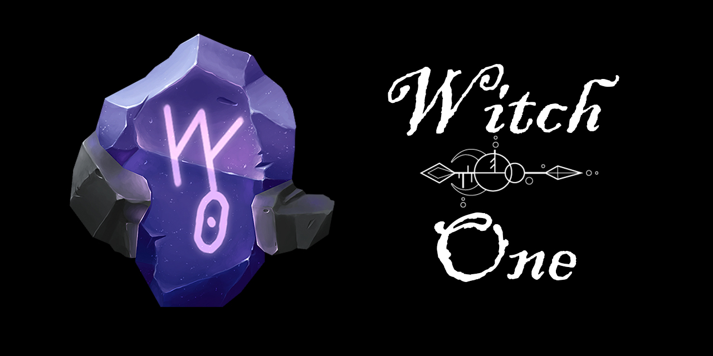

Project Catch.io Developer Reference

Introduction
This is the developer reference for Witch One, internally referred to as Project Catch.io.
If you are part of development team, feel free to add new tasks or comment on existing ones.
Every information that is required for developing with the Project Catch.io team will be documented here. Such information includes:
- Project folder structure
- Coding styles and guidelines
- Project contribution format (semantic version for this project, Pull Request format, etc.)
- Milestones and progress reporting methods
- Team roles
- Documentation format
and more...
You can think of this as a general guideline and a starting point for joining the team or unifying how our works should be prevented in order for them to be considered 'finished'. To keep things organized, project members should document their work and tell everyone how you want others to handle your work. Please keep in mind that you are not expected to read all the docs, but you are expected to understand the parts that is related to your task.
Project Resources
All resources and documents related to the development of project Catch.io is split amongst various repositories, sites and services. We will list all of them here and explain what their purposes are. Some links listed here will not be accessible by the public while some are. Please change the list content if we decide to make adjustments to the team management structure.
- Catch.io Project Repository: The repository for the source code of project Catch.io. This repository is made private, and we only allow access to project developers. However, contents like code documentation or ongoing test builds will be made available to the public with the power of Github CI.
- Catch.io docs repository: The source code for project developer references are kept in this repository. Currently, this repo contains two different document pages.
- Project Development Manual: Hosted via Github Pages, this page contains the auto generated scripting reference for this project. The content of this page will change with every update made to the Catch.io source code. It is convenient, but hard to migrate to other pages as this does not use Markdown for API references (only code manuals are in Markdown).
- Google Drive Shared Folder: Internal documents, weekly meeting records, brainstorming records, project expenses, art/music assets for the project and other information that are meant to be stored for a long time and only meant for team members will be stored here. Non-programmers will mostly interact with Google Drive.
- Itch.io page: Itch.io is used for sharing quick prototype builds of the game (in WebGL for most cases) both inside and outside the team. Generally, this page is used for quick internal testing, but we may consider releasing the game here at some point.
- Trello Project Board: Still experimental, but this is where the development progress regarding Catch.io will be tracked.
- Catch.io GDD: Hosted by Gitbook, this page contains everything about the project such as the game mechanics, expected features, rough timeline, expected release platforms, general marketing strategy, pivot strategies, and more.
Abbreviations & Definitions
To increase the efficiency of communications between members, it is good to use abbreviations. If there are any abbreviations (and the definition of that word) you are using that is foreign to other new members, please add it here.
- PR: Pull Request (when merging a branch or a fork to the master repository)
- Repo: Repository (Git repository)
- doc: Documentation (Projects documentation like this one will be referred to as docs)
- WIP: Working In Progress
- impl: short for implement or implementation
- LGTM: Looks Good to Me (used when a PR does not have any issues and is good to merge)
- Scripts: Refers to the
.cscode that contains game play logic, but are not directly used as part of a Unity game object - Components: This is also a
.cscode, but it is meant to be used as a component for Unity game objects
How to Write Documents
Project docs like this one must be written in Markdown. You can use stackedit.io to write a quick doc, or use the Markdown All in One extension for VS Code. Documentations should be long and comprehensive so anyone can understand. As a general format, think of this README doc as a template to start from.
Q: What should be a doc
Anything that requires more than one people to work on either now or in the future. Or if you have any special requirements regarding your work or working style, write a doc to express that to other members.
Q: Who can write a doc
Anyone within the team. You will need other's permission to edit an existing doc (except for fixing typos or obvious problems), but creating a new one is completely up to you.
Q: Any word requirements
It should be comprehensive, but not boring. There are no strict word count, however it should be long enough to let the reader understand what you want to say and short enough to not make the reader fall asleep.